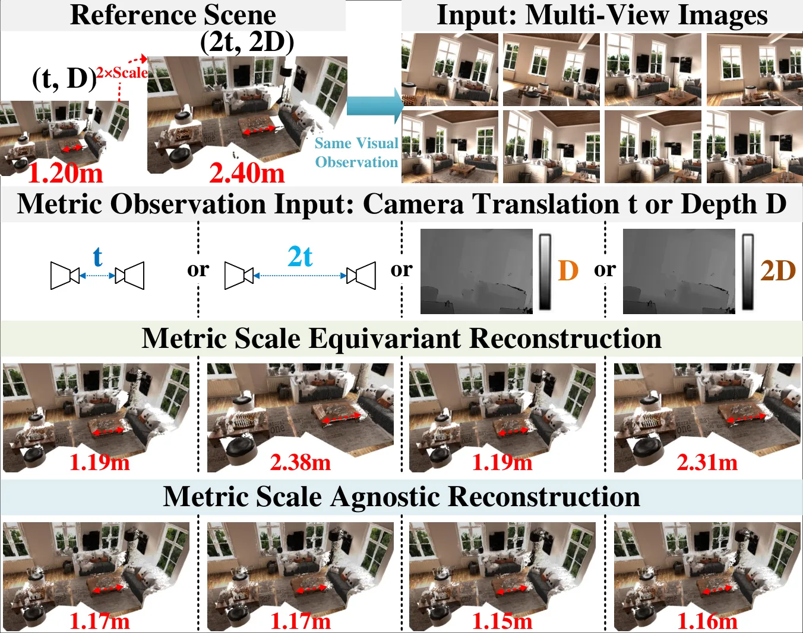
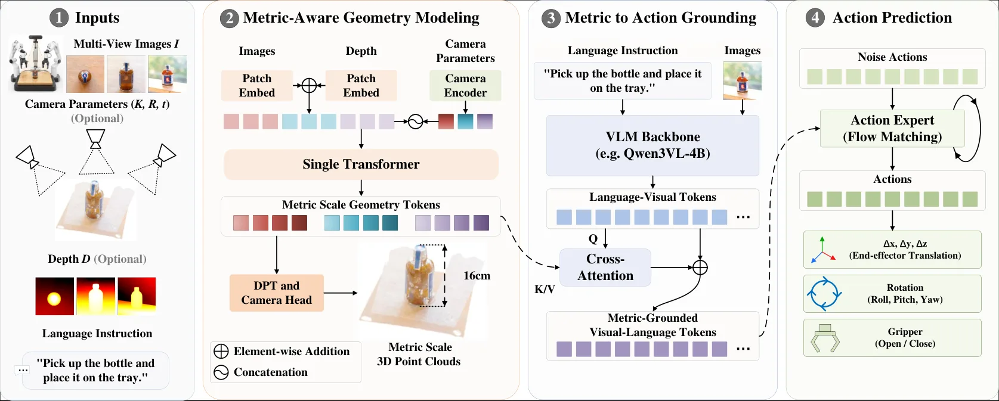
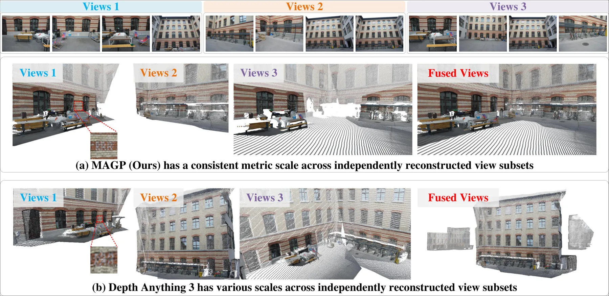
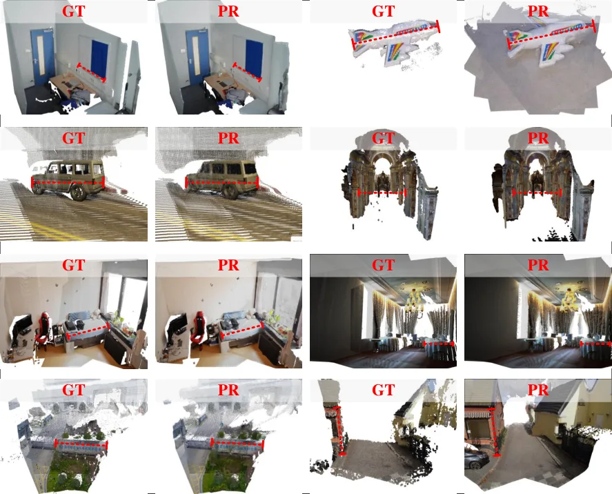
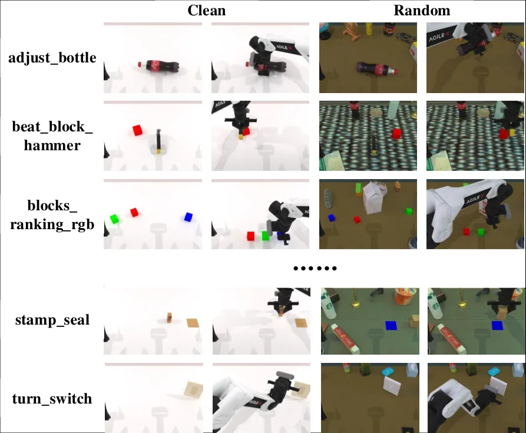

MAGP：面向机器人的度量感知几何感知Beyond Relative Geometry: Metric-Aware Geometry Perception for Robotics
同时命中 Geometry Foundation Models 与 Embodied/robotic perception，并给出重建误差和策略成功率的全文证据。
一句话工作总结
把相对几何升级为可直接服务动作标定和操控的米制几何表示。
完整单篇海报（待补全）
当前记录尚未达到完整海报质量门槛，暂不把摘要或评分理由冒充方法/实验结论。
待补字段：核心结论、动机与问题、方法总览、关键技术细节、实验设置、实验数字与比较。下一次任务需从论文全文或官方 HTML 提取证据后再发布。
摘要
MAGP 通过 Metric Scale Equivariant Augmentation 让重建结果响应相机平移和深度中的真实尺度，并以 Flexible Metric Conditioning 支持任意视图数量及相机/深度输入组合。它把 metric geometry tokens 接入机器人策略，在 ETH3D、MegaDepth、ScanNet++ 以及 LIBERO、RoboTwin、LIBERO-Plus 上验证几何到动作的桥接。
Recent embodied models increasingly leverage geometric representations to improve spatial reasoning and robotic manipulation. However, existing reconstruction methods only reconstruct relative geometry with arbitrary scales, causing predicted object dimensions and spatial distances to vary across scenes, viewpoints, and input configurations. This inconsistency prevents geometric perception from being directly aligned with robotic actions defined on the real-world scale. To address this limitation, we propose Metric-Aware Geometry Perception (MAGP), an end-to-end, plug-and-play framework for metric geometry reconstruction that can be seamlessly integrated into robotic policies. At its core, Metric Scale Equivariant Augmentation encourages the model to reconstruct metric geometry from camera parameters and depth observations, ensuring that the reconstructed geometry follows the metric scale specified by observations. Flexible Metric Conditioning further enables MAGP to support arbitrary view counts and combinations of camera and depth inputs, improving robustness to heterogeneous robotic sensing configurations. Together, these designs produce geometrically consistent reconstructions with stable object dimensions and spatial distances across scenes and sensing conditions. Experiments on ETH3D, MegaDepth, and ScanNet++ demonstrate that MAGP maintains strong relative geometry accuracy while reducing the absolute error by over an order of magnitude, from 2.01m to 0.07m. When integrated into multiple robotic policies, MAGP consistently improves performance on LIBERO, RoboTwin, and zero-shot LIBERO-Plus, with gains of up to 6.26% on RoboTwin. These results demonstrate the effectiveness and generalizability of metric geometry for robotic manipulation.
图表/页面预览

{kind=link}

{kind=link}

{kind=link}

{kind=link}

{kind=link}
